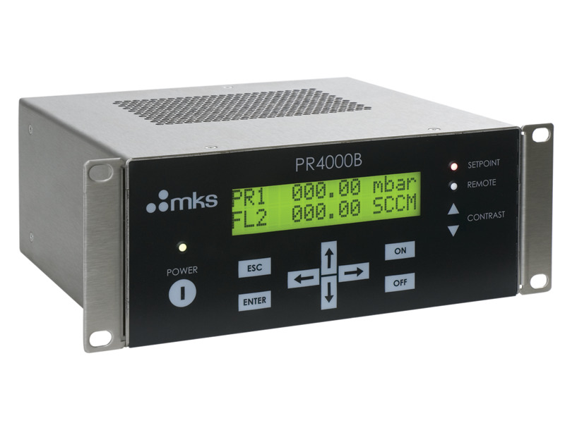
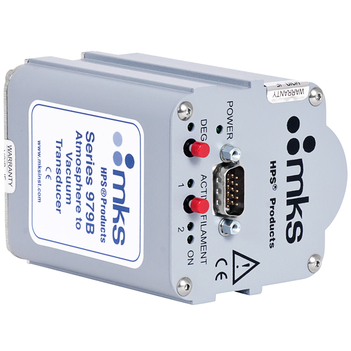
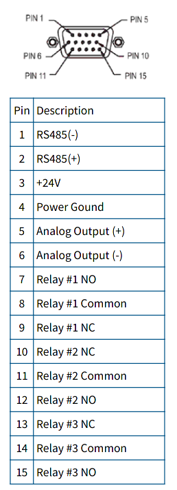
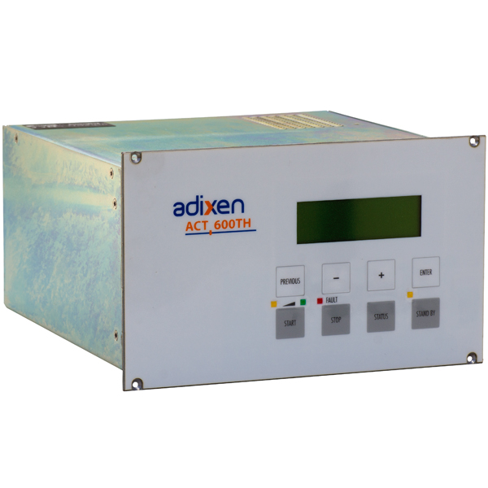
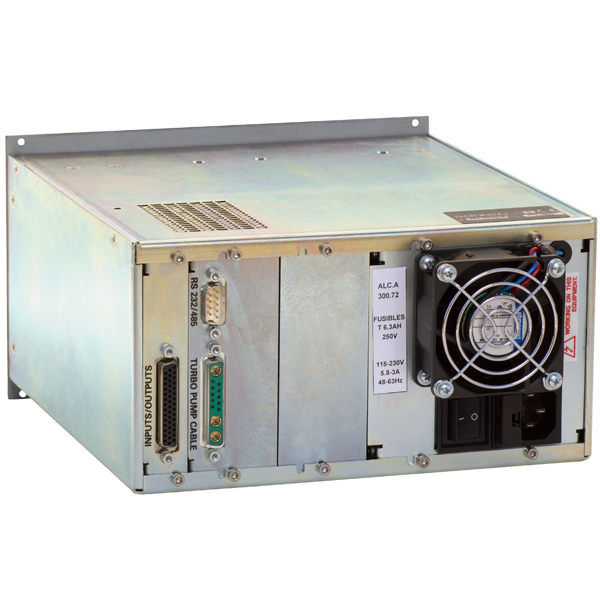

Introducción a la propuesta
En esta sección se abarca
-
Contexto previo
-
Objetivos
-
Descripción del problema
Contexto previo
Objetivos
Implementaciones de sistemas de control
Sin caso: Siemens PLC
Caso SCR-1: National Instruments PXI
Caso Cámara Aplicaciones: Arduino + IoT
Propuesta: Embedded Rust
Comparación MCUs
| Vendor | Tarjeta | Microcontrolador | Clock | Flash | USB | Serial | Timers | ADC/Sample Rate |
|---|---|---|---|---|---|---|---|---|
| Lolin | NodeMCU | Espressif esp8266 | 80Mhz | 1MB | No | 1 UART | 1x23bit | 1x10bit |
| Arduino | Arduino UNO | ATMega 328p | 16Mhz | 16kB | No | 1 UART | 1x16bit | 8x10bit |
| Generico | STM32F103C8T6 | ARM Cortex M3 | 72Mhz | 64kB | Sí | 2 USART | 3x16bit | 2x12bit, 1MSps, |
| Adafruit | Feather M0 | ATSAMD21 ARM Cortex M0 | 48Mhz | 256kB | Sí | 6 SERCOM | 3x16bit | 1x12bit, 350kSps, 6pins |
| Adafruit | ItsyBitsy M4 Express | ATSAMD51 ARM Cortex M0 | 48Mhz | 256kB | Sí | 6 SERCOM | 3x16bit | 2x12bit, 1MSps, 7pins |
Instrumentos
En esta sección se encuentra la documentación esencial para los diferentes instrumentos a controlar en el laboratorio de plasmas. Para cada instrumento se tendran dos subsecciones distintas las cuales se describen a continuación.
Descripción del equipo
En esta sección se encontrarán:
-
Datos básicos como marca, modelo, año de producción, protocolo de comunicación
-
Disponibilidad de un emulador programado
-
Fotos del equipo
-
Descripción del propósito del equipo
-
Datos adicionales considerados importantes
Guía de uso
El contenido de esta sección estará completamente desarrollado una vez se tenga una biblioteca de control del instrumento completa. De manera adicional, para cada instrumento se adjuntará la información de comandos en su protocolo de comunicación respectivo.
MKS PR4000B Power Supply

Información General
| Vendor | Modelo | Año prod. | Comunicación | Funcionalidad |
|---|---|---|---|---|
| MKS | PR400B | ? | RS-232, RS-485 | Digital Power Supply / Display for Mass Flow Controllers & Baratron® Transducers |
Emulador
No se ha desarrollado el código para emular este componente todavía.
Información por parte del vendor
Página con descripción y manuales
https://www.mksinst.com/f/pr4000b-digital-power-supply
Guía de uso
MKS 979B Atmosphere to Vacuum Transducer

| Vendor | Modelo | Año prod. | Comunicación | Funcionalidad |
|---|---|---|---|---|
| MKS | 979B | ? | RS-232, RS-485 | Sensor de presión en cámaras de vacío |
Emulador
No se ha desarrollado el código para emular este dispositivo
Información por parte del vendor
Manual
https://www.idealvac.com/files/manuals/979manual.pdf
Guía de uso
Pinout de puerto de control

Adixen ACT-600TH Turbo Pump Controller
 
Información General
| Vendor | Modelo | Año prod. | Comunicación | Funcionalidad |
|---|---|---|---|---|
| Alcatel Vacuum Technology | ACT-600TH | ? | RS-232, RS-485 | Digital Power Supply / Display for Mass Flow Controllers & Baratron® Transducers |
Emulador
No se ha desarrollado el código para emular este componente todavía.
Información por parte del vendor
Página con descripción y manuales, tienda de un distribuidor
https://www.idealvac.com/Pfeiffer-Adixen-ACT-600TH-Turbo-Pump-Controller/pp/P105817